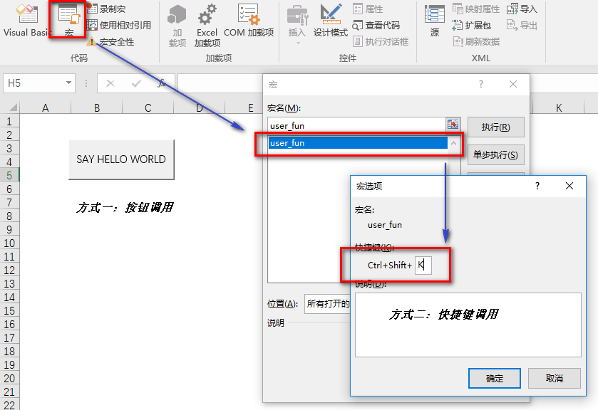
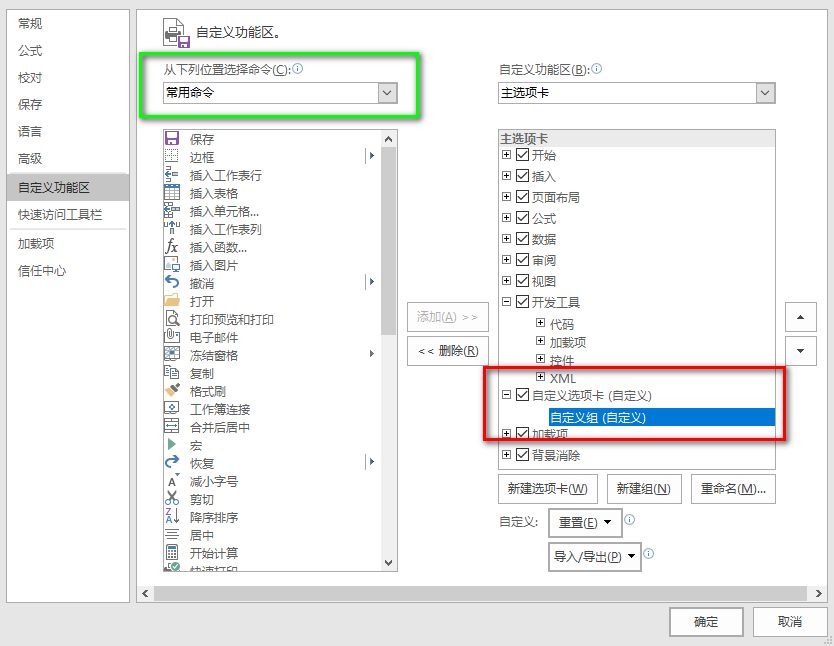

Microsoft Excel 2010自定义功能区(一)¶
在Microsoft Excel中，我们通常借助VBA（Visual Basic for Application）将一些通用或者专用的功能定义为过程（Procedure），然后绑定到快捷键、按钮或者自定义菜单上，以方便使用。本文从可移植性的角度，记录自定义Excel 2010功能区（Ribbon）菜单的方法。
引言¶
假设自定义的功能是say Hello World：
Sub user_fun()
MsgBox "Hello world."
End Sub
我们通常将其保存为启用宏的工作簿（hello_world.xlsm），然后使用快捷键或者绑定按钮事件的方法进行调用：

当我们需要对多个Excel文件都进行say Hello World处理时，就需要复制以上VBA代码到每个文件或者将各个文件内容复制到当前的hello_world.xlsm工作表中去。也就是说，上述处理方式解决了单个Excel文件的特定问题，但是在可移植性上存在不足。
于是我们希望将say Hello World的功能固定到菜单栏，以方便随时对有需要的文件进行处理。这样的方式其实是创建Excel插件（Add-in），对应文件扩展名为.xlam。
相对启用宏的.xlsm文件，.xlam插件分离了数据和代码，用户只需关心数据文件，包含代码的.xlam插件则在后台默默地启动（即不具备图形界面）。否则，如果在其他文件中调用.xlsm文件中的过程，.xlsm文件也会被一并打开，而这对于关心数据处理的用户来说完全没有必要。
于是我们把一开始的代码另存为hello_world.xlam。
手工创建Ribbon菜单¶
Excel 2010已经为用户提供了自定义功能区的功能，文件->选项->自定义功能区，通过新建选项卡和新建组创建自定义的选项卡和分组。

保存后可以看到主选项卡区域出现了自定义的选项卡，当然选项卡下空空如也。接下来为其添加具体的菜单项：在上述对话框中绿色框出区域选择宏，然后将相应的宏拖放到刚才新建的分组中即可。当然，此时的宏列表也是空空如也。
双击hello_world.xlam打开插件，此时并无额外的窗口出现，但是之前的宏代码已然被默默加载了。重新按前述操作来到Excel 选项对话框的自定义功能区，此时上述宏列表区域出现了自定义的user_fun，将其拖放到我们创建的自定义组下，并且可以重命名和选择图标，保存后得到如下完成效果。
此时即便重新打开其他Excel文件，自定义菜单栏始终存在，菜单项的功能依然生效。从上述过程可知，我们需要保证插件hello_world.xlam引用位置保持不变，一旦它被移动或者重命名，相应的功能也就查无此人了。所以，一般推荐将其保存到Excel默认的插件目录。
至此，可以愉快地在自己电脑的任意Excel文件上say hello world了。然而，如果赵、钱、孙、李也都想say hello world，难道每人都需要如此重复一遍？
显然，上述方案的可移植性依然不强，我们希望赵、钱、孙、李收到hello_world.xlam文件后，可以自动完成上述过程。于是，这就需要：